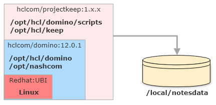

Docker
Run Domino REST API with a Docker image
The Domino REST API Docker image is built on top of an HCL Domino Docker image, inspired by the open source templates. All configuration options found there can be applied to the Domino REST API Docker image. You will need to decide if you want to run a standalone server or an additional server in an existing Domino domain.
Tip
The Domino REST API Docker image contains a Domino server. You don't need a separate Domino installation. The image is completely self contained. Domino REST API is a Domino service, using the network free C API. So there is no scenario where an "only Domino REST API" container would work.
Prerequisites
Running Domino REST API with a Docker image requires the following:
- Docker Desktop. A Docker installation, both Docker (for servers) or Docker Desktop are suitable. Download and install Docker Desktop for your environment (Linux, Windows or macOS).
- Docker Compose. When you install a Docker Desktop version (Windows, macOS), Docker compose is already included. For servers, it's an additional install.
- Login to HCL's instance of FlexNet using your credentials and download the Domino REST API Docker image as an archive file.
- A valid Domino server id, when you want to run as additional server in your existing domain.
- A Docker compose file from Downloadable resources. Select the matching one for either a standalone primary or an additional server.
- A
.envfile. Download thesample.envfrom Downloadable resources. Rename the file to.env, and update the.envfile with your values.
Docker Desktop License
Docker desktop recently became subject to a Docker subscription, make sure you are compliant or use the command line.
Getting Ready
A Domino server uses one persistent volume to store its data. This volume also stores log files and the server’s ID file. When you remove the container that volume remains and is reused when you start a new container instance.

Note
When you want to run multiple servers, create separate volumes for each. DO NOT share volumes between running instances.
Store the following files in a folder:
- server id. Make sure that your server id file is named
server.id. - docker-compose.yml. Rename the compose file you downloaded from resources to
docker-compose.yml. - .env . Edit the
.envfile from resources to update your values. You need to replace all values after the equal (=) sign.
You can configure multiple Domino servers in a single compose file. For details, check the Docker compose documentation. Domino REST API in mind, each server needs its own volume.
Load the docker image that you've downloaded from prerequisites above. Make sure you extract the tar.gz file first. :
docker load -i [name_of_tar_file].tar
After loading the image, note the image name that got installed. This needs to updated in the CONTAINER_IMAGE variable described below.
Example loaded image:
Loaded image: docker.qs.hcllabs.net/hclcom/projectkeep-r12:1.10.0
Table of variables
Depending on the compose file you choose, a different set of variables needs to be replaced. If a variable isn't in the compose file, you don't need it. We keep the variable names in sync with One-touch Domino setup, thus in the compose file you will find gems like SERVERSETUP_SERVER_NAME: "${SERVERSETUP_SERVER_NAME}". This makes naming of variables consistent.
Refer also to the official List of One-touch environment variables for reference.
| Variable | Example | Remarks |
|---|---|---|
| CONTAINER_HOSTNAME | domino.acme.com | Pro tip: use something.local for local testing |
| CONTAINER_IMAGE | docker.hcllabs.net/hclcom/projectkeep-r12:latest | Check carefully for the current image name! :latest most likely need to be replaced. Use "docker images ls" to see the exact nameor update based on the image that was loaded, using the example above this would be docker.qs.hcllabs.net/hclcom/projectkeep-r12:1.10.0 |
| CONTAINER_NAME | domino-keep-test02 | |
| CONTAINER_VOLUMES | domino_keep_notesdata | no spaces or special chars |
| SERVERSETUP_ADMIN_CN | Peter Parker | |
| SERVERSETUP_ADMIN_FIRSTNAME | Paul | |
| SERVERSETUP_ADMIN_LASTNAME | Herbert | |
| SERVERSETUP_ADMIN_PASSWORD | domin4ever | |
| SERVERSETUP_EXISTINGSERVER_CN | domino01 | YOUR EXISTING SERVER |
| SERVERSETUP_EXISTINGSERVER_HOSTNAMEORIP | 10.45.10.3 | MUST BE REACHABLE, can use DNS too |
| SERVERSETUP_NETWORK_HOSTNAME | keep01.domino.acme.com | MUST RESOLVE |
| SERVERSETUP_ORG_CERTIFIERPASSWORD | supersecret | |
| SERVERSETUP_ORG_ORGNAME | Stark Industries | YOUR EXSISTING ORG |
| SERVERSETUP_SERVER_DOMAINNAME | MarvelPhase4 | YOUR EXSISTING NOTES DOMAIN |
| SERVERSETUP_SERVER_NAME | keep-server-01 | |
| SERVERSETUP_SERVER_SERVERTASKS | replica,router,update,amgr,adminp,http,keep | Refer to the Domino REST API task page. |
Run Domino REST API
Start Domino REST API using docker-compose on all supported platforms:
docker-compose up
Note
- Start in the directory where the files
server.idanddocker-compose.ymlare located. - The setup can take a few minutes, depending on your hardware and the network speed to your primary server.
Tip
When you don't have DNS setup, amend your hosts file for name resolution:
/etc/hostson Linux or macOSC:\Windows\System32\drivers\etc\hostson Windows
- You can then use Docker desktop to start/stop the container.
- Use
docker-compose up -dto run docker in the background. - Don't run two Domino REST API containers sharing the same volume at the same time, alternate (e.g. debug/non-debug) or with 2 different volumes is OK.
Validation
To validate that an instance is successfully running on a container:
- A docker container should be created and running on your docker machine. To check that the container is up, issue this command on a terminal:
docker ps
- The container should be accessible via
docker exec -it $containername /bin/bash
- Domino should be accessible on
http://$host:80(might need configuration). - Domino REST API should be accessible on
http://$host:8880. - Domino REST API Management should be accessible on
http://$host:8889. - Metrics should be accessible on
http://$host:8890/metrics.
Alternate Docker configuration
When you run your Domino servers on Linux, you probably use the Nashcom startup script for Domino.
On this foundation, the GitHub.com hosted Domino Docker project offers management scripts that allows easy management of your Docker container using a command domino_container.
Installation steps are as follows:
- Clone the domino-docker repository:
git clone https://github.com/HCL-TECH-SOFTWARE/domino-container - Change into the installations directory:
cd start_script - Run the installer
./install_domino_container(You might needsudo)
Now you have the command domino_container at your disposal:
- Use
domino_container cfgto set your configuration. - Use
domino_container envfor the environment values. - Start Domino and Domino REST API using
domino_container start. - Learn more about the scripts using
domino_container help.